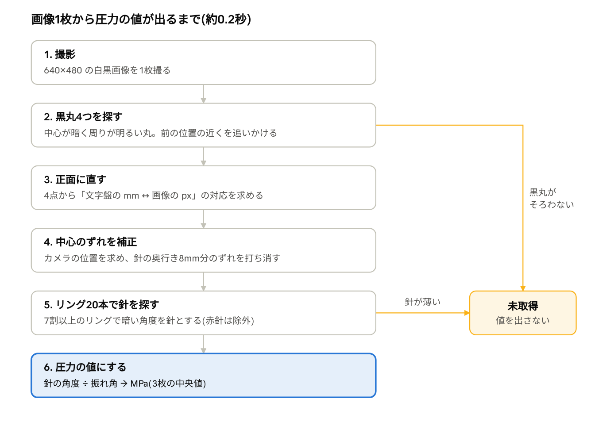
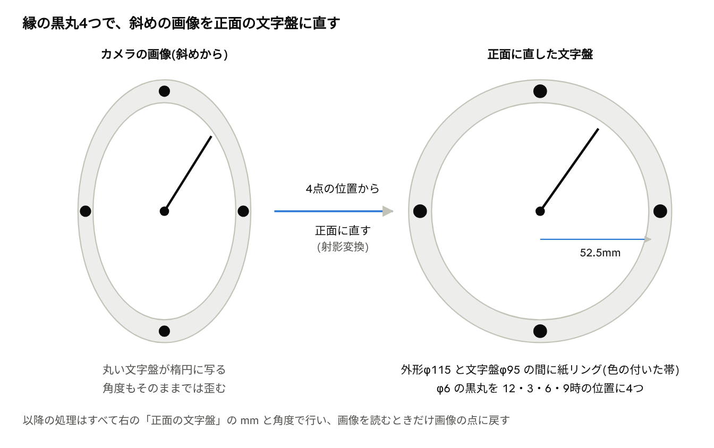
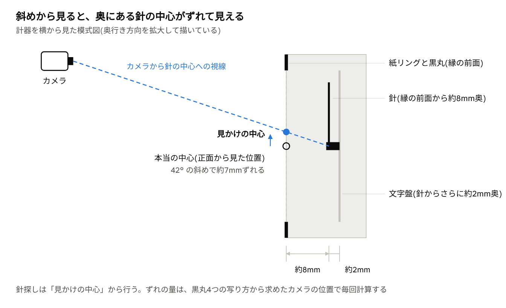
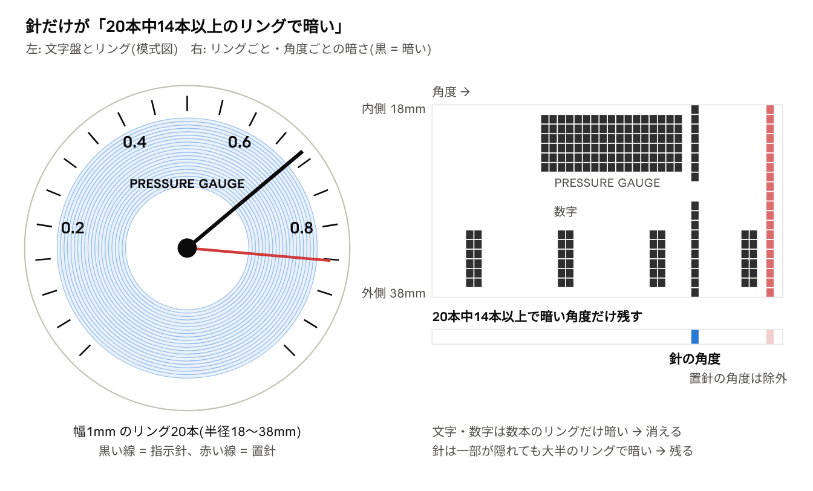

機械室のアナログ圧力計を、数千円のカメラ付きマイコンで自動で読めないか試しました。結果、機械学習を使わず、XIAO ESP32S3 Sense 単体で、正面からでも約42° の斜めからでも、誤読0・平均誤差0.3〜0.5%FS で読めるようになりました。
この記事では、「画像のどこが針なのか」をマイコンがどうやって見つけているのかを、図で説明します。ポイントは3つです。
| 使ったもの | 内容 |
|---|---|
| カメラ・処理 | XIAO ESP32S3 Sense(OV3660)、640×480 の白黒画像、1枚約0.2秒で解析 |
| 圧力計 | 0〜1.0MPa、外形φ115、文字盤φ95、赤い置針付き |
| マーカー | φ95〜φ115 の紙リングにφ6mm の黒丸4つ(紙に印刷して貼るだけ) |
| 評価用 | 実物の文字盤にステッピングモーターの針を付けた疑似圧力計(針の正解が分かる) |
画像を撮ってから値が出るまでは6段階です。途中で自信がなければ、値を出さず「未取得」として記録します。

以下、第2〜5段階を順に説明します。
カメラを斜めに付けると、丸い文字盤は楕円に写り、目盛りの角度も歪みます。そこで、文字盤(φ95)と計器の外形(φ115)の間に紙のリングを貼り、12時・3時・6時・9時の位置に黒丸を印刷しました。
黒丸4つの本当の位置(中心から52.5mm)は分かっているので、画像の上でそれがどこに写ったかが分かれば、「文字盤の上の点 [mm] → 画像の上の点 [px]」の対応(射影変換)が決まります。以降の処理はすべて「正面から見た文字盤」の mm と角度で行い、画像を読むときだけこの対応で画像の点に変換します。

黒丸の探し方は「中心が暗く、周りが全周明るい」場所を探すだけです。計器の縁の黒い部分や影は、周りの半分くらいが暗いので選ばれません。起動時は画像全体から4つの組を探し、その後は前の位置の近くだけを追いかけます。
この仕組みのおかげで、カメラを付け直しても、回転中心や目盛りの設定はそのまま使えます(文字盤の mm で保存しているため)。
黒丸を貼ったのは計器の前面(縁)ですが、針はそれより約8mm奥、文字盤はさらに約2mm奥にあります。正面からなら関係ありませんが、斜めから撮ると「黒丸の面」の上で見た針の中心がカメラ側へずれて見えます。約42° の斜めでは、そのずれは約7mmでした。
このずれを無視した最初の斜めの測定では、50点のほとんどで赤い置針を針として読んでしまいました。そこで毎回次の計算をしています。

針と文字盤の間(約2mm)のずれは計算に入れていません。角度の計算には影響しませんが、目盛りの位置を画面でクリックして設定するときに斜めだと約2° ずれます。目盛り合わせはカメラを正面に置いて行います。
ここが一番の工夫です。文字盤には針のほかにも、数字「0.2」「0.6」、文字「PRESSURE GAUGE」、目盛り線など、黒いものがたくさんあります。ただし、針だけは中心から外周までつながった一本の線です。この違いを使います。

| 文字盤の上のもの | 暗いリングの本数 | 結果 |
|---|---|---|
| 針 | ほぼ20本すべて | 残る |
| 針(一部が文字に重なる) | 重なった数本以外は暗い | 残る |
| 数字・文字 | 数本 | 消える |
| 目盛り線 | 外周の数本 | 消える |
最初は半径を太い3本の帯に分け、「3本とも暗い」角度を針にしていました。ところが、針が1本の帯で文字に隠れたり、先端が細くて外側の帯で薄かったりすると、針そのものが消えてしまいました(50点中16点が未取得)。「7割以上」にして一部のリングの不調を許すようにしたところ、未取得はほぼなくなりました。
圧力計の赤い置針も、中心から伸びる線なのでリングの方法では消えません。そこで置針の位置(今回は0.81MPa)を設定しておき、その前後3° は針の候補から外しています。針が置針に重なったときは、「そこがいつもより明らかに濃い」場合だけ針とみなします。
もう一つ大事にしたのが、許されないのは「間違った値」で、「値なし」は許される、という考え方です。次のようなときは値を出さず、「未取得」として記録します。
実際には、3枚撮って値が出たものの中央値を1回の値にしています。
疑似圧力計の針をランダムな位置に50回動かし、針の正解と読み取り値を比べました。どの条件でも誤読は0です。
| 条件 | 値が出た回数 | 誤読 | 平均誤差 | 最大誤差 |
|---|---|---|---|---|
| 正面・天井照明 | 48/50 | 0 | 0.26%FS | 0.74%FS |
| 斜め約42°・天井照明 | 48/50 | 0 | 0.40%FS | 0.98%FS |
| 斜め・デスクライトを追加 | 50/50 | 0 | 0.50%FS | 1.19%FS |
| 斜め・薄暗い(背後にPCモニター) | 47/50 | 0 | 0.50%FS | 1.09%FS |
値が出なかった回の大半は、針が赤い置針にぴったり重なったときです。疑似圧力計はギアのガタで針の位置自体に1%FS程度のばらつきがあるので、誤差にはその分も含まれています。
読み取った値は5秒ごとにPCのサーバー(Flask)へ送り、ブラウザでトレンドグラフとして見られるようにしています。
| つまずいた点 | 対策 |
|---|---|
| 数字や文字に針が隠れて消える | 太い帯3本 → 細いリング20本の7割判定 |
| 斜めからだと赤い置針を読む | 視差の補正と、置針の角度の除外 |
| 黒丸が計器の黒い縁や影に引っ張られる | 「周りが全周明るい丸」を探す方法に変更 |
| カメラを大きく動かすと別の黒い点を追いかける | 紙リングの上にあるかを毎回確かめ、外れたら画像全体から探し直す |
| 照明がカバーガラスに映り込むと黒丸が消える | 庇を回して映り込みを遮る(偏光フィルムも検討中) |
残っている課題は、更新の速さ(1回約3秒)と、針が置針に重なる位置での未取得です。次は最終的にラズパイでデータを集める形にし、他のカメラ付きマイコンや機械学習の方法とも比べていく予定です。